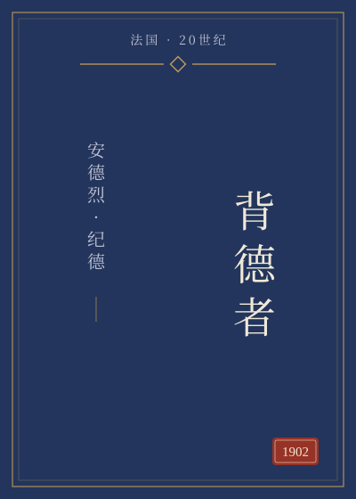
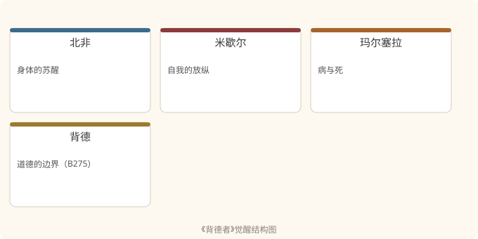

背德者
一、基本信息
| 作者 | 安德烈·纪德 |
|---|---|
| 成书/出版 | 1902年（作者页B275口径：L'Immoraliste (1902)——创作盛期之作） Andre Gide — Encyclopaedia Britannica（百科全书） |
| 国别/地区 | 法国 |
| 时代 | 现当代 · 20世纪 |
| 体裁 | 中篇小说 |
| 语言 | 法语 |

觉醒结构图（主题·结构图）
二、创作背景
Britannica（B275）：纪德 major_works 载'L'Immoraliste (1902)'——'the page lists it among works from his great creative period'（创作盛期——B275）；'the point at which concern for the self must be superseded by moral principles'（B275 问答）。
纪德（B275）：1947年诺奖。
三、内容脉络
米歇尔的北非觉醒与自我放纵（通说待核）。
四、主要人物表
| 人物 | 身份 | 说明 |
|---|---|---|
| 米歇尔 | 学者 | （通说待核） |
| 玛尔塞拉 | 妻子 | （通说待核） |
五、主题与艺术特点
- 自我的觉醒与'背德'（B275：moral ambiguity 语境）。
- 北非的身体苏醒（通说待核）。
- '自我关切与道德原则'的边界（B275 问答）。
六、影响与评论
- 作者页：纪德创作盛期之作（B275 作者页口径）。
Andre Gide — Encyclopaedia Britannica（百科全书） - Britannica：纪德1947年诺奖（B275 作者级）。
Andre Gide — Encyclopaedia Britannica（百科全书）
七、阅读建议
难点
- '背德'的伦理阅读。
- 殖民地北非背景。
- 《背德者》（人民文学出版社/上海译文版本，通说待核）。
- 法文原版（Gallimard）。
先《窄门》后本作（两极对照）。
八、待核实
- 1902年出版（Mercure de France说）核对。
- 米歇尔/玛尔塞拉人名核对。
- 与《窄门》的对位（作者婚姻语境——B275 已载）待核。